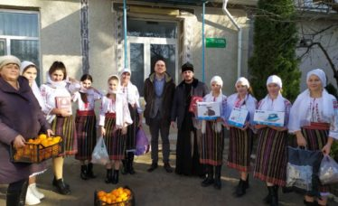

Explorează Susleniul
Instituția Publică Gimnaziul ”Vasile Lupu”
este o instituție de învățământ de Stat, care își începe activitatea în 1954.Pe parcursul anilor, instituția, conform deciziilor Consiliului Raional Orhei, a suferit mai multe reorganizări.Instituția își desfășoară activitatea într-un schimb, într-un singur bloc cu anexă.
Grădinița de copii ”Andrieș”
care a trecut prin transformări frumoase după o reparație capitală. După modernizare, instituția a devenit mai confortabilă și mai călduroasă.
Biserica Adormirii Maicii Domnului
este una din cele două biserici, datând din 1898. Biserica se află în partea din jos a satului, și sărbătorește hramul pe data de 15/28 august, unde este paroh Protoiereul Neonil Cocu care recent și-a sărbătorit frumoasa vărstă de 50 ani.
Azilul de bătrâni ”Casa Noastră”
La azil sunt stabiliţi circa 40 de bătrîni de diferite vărste, care în timpul sărbătorilor de iarnă, de Paște sunt vizitați de diferiți vizitatori care aduc diferite daruri.